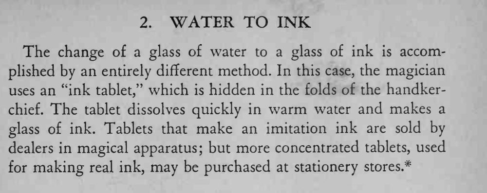

一杯清水，用手帕盖住再揭开，整杯水变成了墨水。
药片要藏稳，落水前别让观众看到；温水溶解更快。

The change of a glass of water to a glass of ink is accomplished by an entirely different method. In this case, the magician uses an "ink tablet," which is hidden in the folds of the handkerchief. The tablet dissolves quickly in warm water and makes a glass of ink. Tablets that make an imitation ink are sold by dealers in magical apparatus; but more concentrated tablets, used for making real ink, may be purchased at stationery stores.*